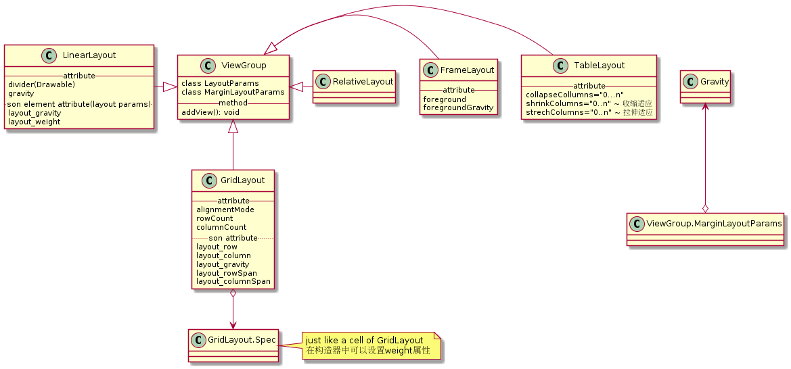
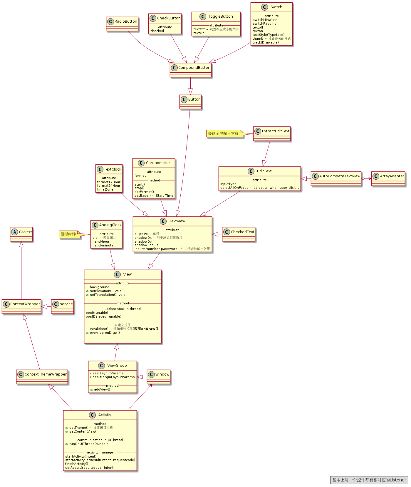
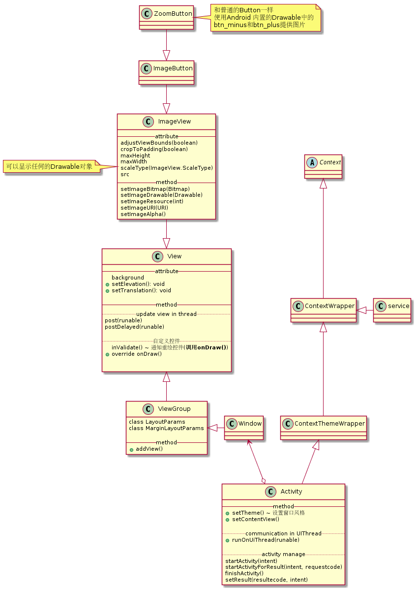
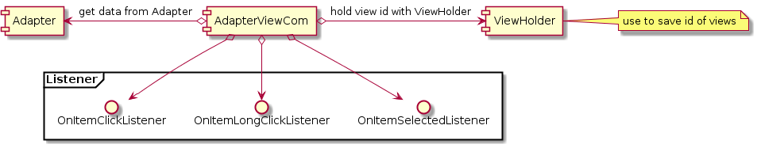
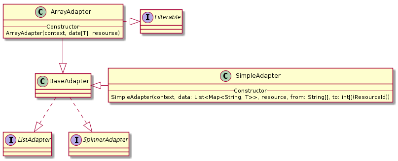
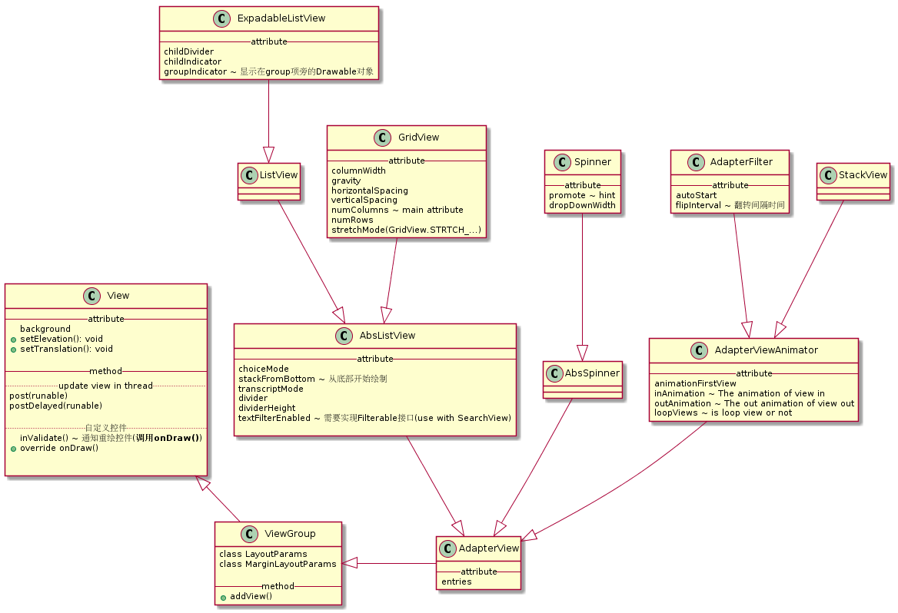
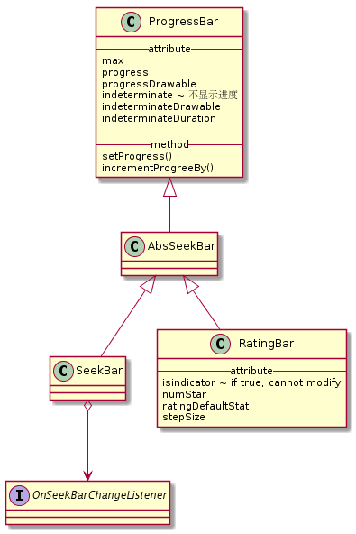
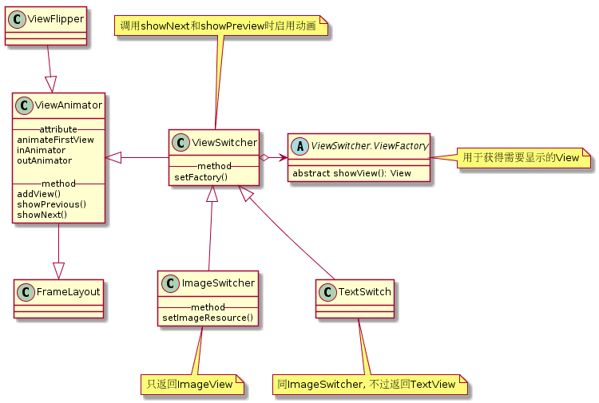
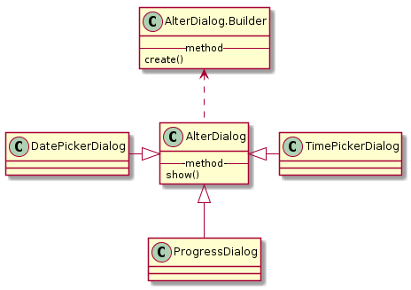
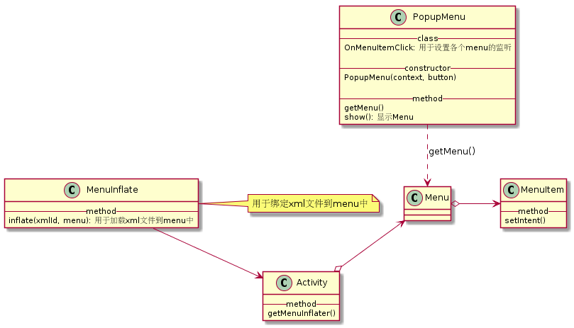

  
在安卓中, 设置Progress Bar除了使用控件之外, 还可以使用Activity自带的Progress 控件 

Toast.makeText()
--attribute---
firstDayOfWeek()
focusedMonthDateColor()
maxDate() ~ 使用格式 mm/dd/yyyy
minDate()
---inner class---
OnDateChangeListener
--method---
setMinValue()
setMaxValue()
setIconifiedByDefault(boolean)
setSubmitBottomEnabled(boolean)
setQueryHint(charSequence)
setOnQueryTextListener(OnQueryTextListener)
class NotificationManager{
---method---
notified()
cancel()
}
Notification.Builder <.. Notification
Notification ..> Notification
除了使用系统提供的控件之外, 启用Dialog还可以通过设置窗口风格和使用内置Activity提供的方法获得.
showAsDropDown()
showAtLocation()
dismiss()

class ActionBar{
--method--
show()
hide() ~ 还可以把主题设置为xxx.NoActionBar来隐藏ActionBar
setDisplayHomeAdUpEnabled(boolean)
setHomeButtonEnable
}
ActionBar o--> Activity: getActionBar() || getSupportActionBar()
subMenu ~ 使用原始菜单键启动的Menu项
contextMenu ~ 上下文菜单
popupMenu ~ 为组件填充菜单项
<item id="..." title="..." />: 定义菜单选项<group checkableBehavior="true|false"/>: 将多个item项包装成一个菜单组<menu/>: 菜单文件的标头: